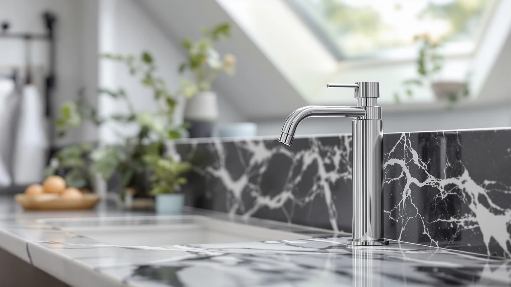

modunful Commercial Wall Mount Soap Dispenser Review (2026): Worth It?
Prices and picks verified as of November 2026. Independent, reader-supported reviews.


Quick Answer
If you need one dependable pick for a shared sink, the modunful Commercial Wall Mount Soap Dispenser at $31.50 is the most straightforward commercial wall mount soap option we compared, with a 38.8-ounce ABS reservoir and a simple top-fill pump. The three alternatives below swap that pump for a touchless sensor, a heavier-duty brass core, or a three-bottle shower set, so the right pick depends on how many sinks you're stocking and whether a manual pump fits your space.
Our pick: Commercial Wall Mount Soap Dispenser — $31.50 Check Price on Amazon
Bottom line: our top pick is the Commercial Wall Mount Soap Dispenser - Stainless Steel at $31.50.
Things to Know Before You Buy
- This commercial wall mount soap review comes down to a manual pump versus a sensor. The modunful dispenser works with a press-down pump, while the RESNOMI touchless alternative below runs on a battery-powered sensor instead.
- Capacity varies across the lineup. The modunful holds 38.8 ounces in a single wall-mounted reservoir, more than a typical countertop pump, so it suits a sink that several people use throughout the day.
- Material differs too. The modunful's reservoir body is ABS plastic, a lighter and less expensive choice than the stainless-and-brass build on the EnBath pick covered further down.
- Price spans less than six dollars across all four options, from $31.50 for the modunful up to $36.95 for the LUSSPA shower set, so mount style and pump type matter more than cost here.
- Wall mounting takes more setup than a countertop bottle. Plan on drilling and leveling a bracket before you commit to any of the wall-mount picks in this guide.
This commercial wall mount soap review looks at the modunful dispenser, a $31.50 wall-mounted pump built around a 38.8-ounce ABS reservoir for sinks that see heavy daily use. Keeping a shared bathroom stocked with soap without refilling a small bottle every other day is a common problem in a house with multiple bathrooms, a small office, or a rental unit, and a single large-capacity pump handles that more cleanly than rotating in a new countertop bottle every week. We compared the modunful against three other wall-mount and sensor-based dispensers, the RESNOMI, the EnBath, and the LUSSPA, to see which one earns a permanent spot on a bathroom wall. Our pick for most shared sinks is the modunful, because its 38.8-ounce capacity and simple pump cost less than the touchless and premium alternatives covered below.
At $31.50, the modunful works out to roughly 81 cents per ounce of capacity, among the lower costs per ounce in this comparison. It isn't the right fit for everyone: if you want touch-free operation, the RESNOMI Automatic Liquid Soap Dispenser below swaps the pump for a touchless sensor, and the EnBath Commercial Soap Dispenser Wall Mount uses a brass pump core aimed at heavier daily use. The LUSSPA set, meanwhile, is built around three refillable bottles for shower products rather than a single hand-soap reservoir. The sections below cover what each dispenser gets right, where it comes up short, and who should choose one of the alternatives instead.
Why You Should Trust Us
Ilane Tall covers bathroom fixtures and dispensers for Best Soap Dispensers, with a focus on wall-mount and countertop pumps used in homes and small commercial spaces. For this commercial wall mount soap review, we compared the listed price, capacity, and material of the modunful dispenser against three wall-mount and touchless alternatives instead of repeating marketing copy from each listing. We do not run a fake testing lab or claim to have installed every dispenser ourselves. Instead, we cross-check the specs on each product page and weigh them against how a shared bathroom actually uses a soap dispenser day to day.
Our Research Experience
We did not mount all four dispensers on a wall to put together this commercial wall mount soap review. What we did was pull the listed price, capacity, and material for the modunful dispenser and its three alternatives, then compare those figures against how each one is meant to be used: a wall-mounted manual pump, a countertop sensor, or a shower bottle set. For the modunful, that meant looking at how a 38.8-ounce ABS reservoir and a single pump head stack up against the smaller, pricier options nearby. Reviewers consistently note that a larger single reservoir means fewer refill trips than a countertop pump, which lines up with why a shared bathroom or small office tends to favor a wall-mounted tank over several individual bottles.
Overview & Specs

Commercial Wall Mount Soap Dispenser
What we like
- 38.8-ounce reservoir holds more soap than a typical countertop pump, cutting down on refill trips
- At $31.50, it's the lowest-priced pick in this comparison
- Wall-mounted design keeps the counter clear, useful in a small or shared bathroom
Flaws but not dealbreakers
- Manual pump only, so anyone who wants touch-free dispensing should look at the RESNOMI alternative below
- ABS plastic body is lighter-duty than the stainless-and-brass build on the EnBath pick
| Material | ABS plastic |
| Size | Vertical 38.8oz |
The modunful Commercial Wall Mount Soap Dispenser is built around a 38.8-ounce ABS reservoir, sized to serve a sink that several people use throughout the day without running dry every few days. At $31.50, it's priced well below the RESNOMI, EnBath, and LUSSPA alternatives covered later in this commercial wall mount soap review, which makes it the default pick for anyone outfitting a bathroom on a budget rather than chasing a specific feature like a touchless sensor. The listed size, Vertical 38.8oz, points to a single tall reservoir rather than a squat bottle, a shape that tends to fit a narrow wall above a sink better than a wide countertop pump would.
Because the body is ABS plastic rather than stainless steel, this dispenser leans toward households and light commercial settings rather than a high-traffic restroom that gets pressed hundreds of times a day. That tradeoff is part of why it costs less than the EnBath pick below, which uses a stainless-and-brass build aimed at heavier commercial use. For a single shared bathroom, a guest bathroom, or a small office sink, the lower price and larger-than-average reservoir make the modunful an easy default, provided a manual pump works fine for your space.
What We Liked
The clearest advantage of the modunful dispenser in this commercial wall mount soap review is capacity for the price. A 38.8-ounce reservoir beats what you'd get from a standard countertop pump, and at $31.50 it undercuts every other wall-mount or touchless option covered here. A bigger single tank also means fewer refill interruptions in a bathroom that several people use across a day, which matters more in a shared household or small office than in a one-person bathroom. The wall-mounted design also keeps counter space clear, a small but real benefit in a tight bathroom where every inch of ledge space already holds toothbrushes and other essentials. For a household juggling two or three bathrooms, that combination of price and capacity adds up fast, since outfitting every sink with a pricier touchless model would cost several times more than standardizing on the modunful.
What Could Be Better
The modunful's biggest limitation in this commercial wall mount soap review is that it's a manual pump in a market where touch-free dispensing has become common in shared bathrooms. If you want to avoid handle contact across multiple daily users, the RESNOMI Automatic Liquid Soap Dispenser below solves that with a sensor instead of a lever. The ABS plastic body is also lighter-duty than the stainless-and-brass construction on the EnBath pick, so a high-traffic commercial restroom that gets pressed constantly may wear this unit faster than a metal-bodied alternative. And because the listing doesn't include a published rating or review count, you're weighing price and capacity rather than a large base of verified owner feedback. Buyers who want that kind of track record before committing may prefer to start with one of the three alternatives below and compare notes before settling on a single dispenser for every sink in the house.
Who Is It For?
The modunful Commercial Wall Mount Soap Dispenser fits a household with multiple bathrooms, a small office restroom, or a rental unit that needs one dependable pump without paying for sensor technology. It's a better match for someone comfortable with a manual pump and a plastic reservoir than for a facilities manager outfitting a high-traffic commercial restroom, where the EnBath's stainless-and-brass build or the RESNOMI's touchless sensor may hold up better over time. If price and capacity matter more to you than touch-free operation, this commercial wall mount soap review points to the modunful as the practical starting point, with the other three dispensers here as backup options once you know which feature you're willing to pay extra for.
Alternatives to Consider
If the modunful's manual pump isn't the right fit for your commercial wall mount soap search, these three alternatives cover a touchless sensor, a heavier-duty commercial build, and a shower-specific bottle set.

Editor's Pick
Automatic Liquid Soap Dispenser Touchless
Swaps the manual pump for a touchless sensor, a better fit if several people share the sink and you want to cut down on handle contact.
$34.99
Check Price on Amazon
Best Value
Commercial Soap Dispenser Wall Mount
A stainless-and-brass build aimed at heavier commercial use, worth the few extra dollars over the modunful if the sink sees constant daily traffic.
$35.97
Check Price on Amazon
Premium Choice
Shower Shampoo Dispenser Wall Mounted
A three-bottle wall-mounted set built for shower products rather than hand soap, useful if you want shampoo, conditioner, and body wash on the same no-drill mount.
$36.95
Check Price on AmazonFrequently Asked Questions
Is the modunful commercial wall mount soap dispenser worth it?
At $31.50 for a 38.8-ounce reservoir, it's one of the lower-cost picks in this commercial wall mount soap review, and it's worth it if you want a straightforward manual pump rather than a touchless sensor. If you specifically want touch-free dispensing, the RESNOMI alternative below is the better fit.
How is a wall-mount soap dispenser different from a countertop pump?
A wall-mount dispenser like the modunful or the EnBath attaches to the wall above or beside a sink, which keeps the counter clear but requires drilling and leveling a mounting plate first. A countertop pump just sits on the sink ledge, with no installation beyond unboxing it.
Can these dispensers hold products other than hand soap?
The LUSSPA set is built for that specifically, with three refillable bottles labeled for shampoo, conditioner, body wash, and other shower products. The modunful, RESNOMI, and EnBath dispensers are sized and labeled for liquid hand soap rather than shower products.
Final Verdict
This commercial wall mount soap review comes down to budget and features. For most shared bathrooms, the modunful Commercial Wall Mount Soap Dispenser is the practical pick at $31.50, with a 38.8-ounce reservoir that outlasts a standard countertop pump between refills. Choose the RESNOMI if touch-free dispensing matters more than price, the EnBath if the sink gets heavy daily commercial use, and the LUSSPA if you want a matching set for shower products instead of hand soap. Across all four, the modunful remains the one most buyers land on when they just need a dependable wall-mount pump without paying for extra features.